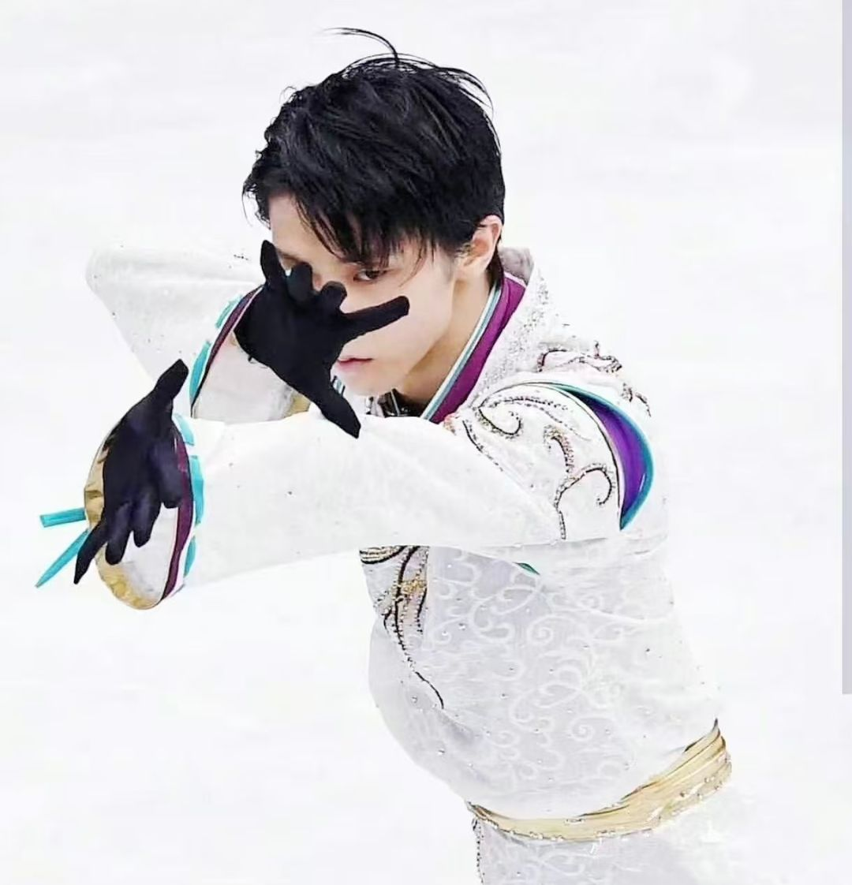

羽生结弦（Yuzuru Hanyu），1994年12月7日出生于日本宫城县仙台市，是世界花样滑冰男子单人滑项目的传奇运动员。他是史上首位实现奥运会、世锦赛、大奖赛总决赛、四大洲锦标赛、世青赛、青年组大奖赛总决赛全满贯的男子单人滑选手，也是花滑界公认的「技术与艺术完美融合」的代表。
羽生结弦以超高难度的跳跃（如4A四周半跳）、细腻的滑行技术、强烈的舞台感染力著称，更以「一生悬命」的拼搏精神和谦逊有礼的品格，赢得了全球粉丝的喜爱，被誉为「冰上贵公子」。
